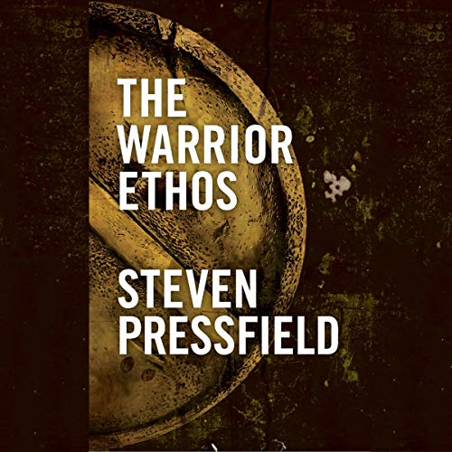
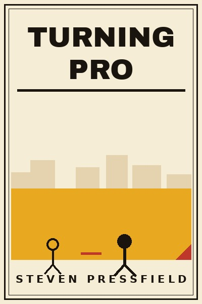

Library › The War of Art vs Turning Pro
The War of Art vs Turning Pro: Which Should You Actually Read?
Both books live on the same shelf: Creativity. Both are free to read here, in full, right now. The War of Art (2002, Steven Pressfield) argues: There's a force whose sole mission is to stop you from doing your work. Naming it - Resistance - is … Turning Pro (2012, Steven Pressfield) argues: The amateur waits for inspiration and organizes life around fear; the professional shows up daily, p…

The War of Art
Pressfield spent 17 years failing as a writer before naming the enemy that beat him daily: Resistance - the universal, invisible, internal force that activates whenever you attempt anything that would move you from a lower sphere to a higher one (art, business
READ THE WAR OF ART FREE →
Turning Pro
The sequel to The War of Art names the enemy (Resistance: fear, procrastination, self-medication, drama) and prescribes the identity shift: stop being an amateur about your calling. The amateur's life is shadow.calling (addictions, distractions, drama that imi
READ TURNING PRO FREE →⚖ The Straight Answer
Read The War of Art if you want break through the blocks and win your inner creative battles - meet th
Read Turning Pro if you want tap your inner power and create your life's work. what lies between us
The honest order for most readers: start with Turning Pro for the base, then go deeper with the other. Both summaries are free, no paywall, in 26 languages.
Every summary is free: lessons, examples, action steps, audio in your language.